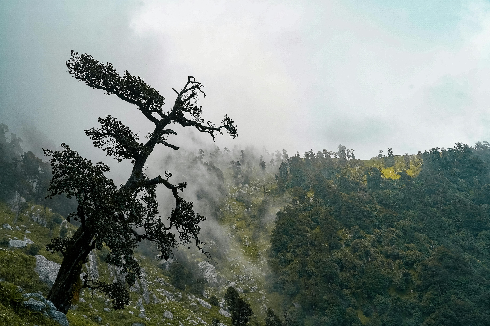
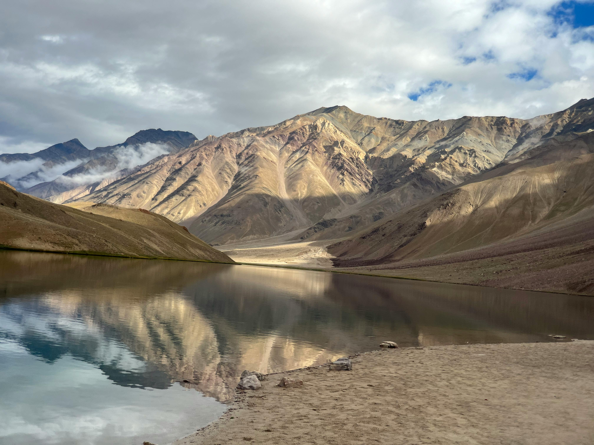

Popular Treks

Triund Trek
Easy
1-2 days
Mar-Jun, Sep-Nov
2,875 m
Perfect for beginners, with spectacular views of Kangra Valley and the Dhauladhar range. The trek starts from McLeodganj and can be completed in a day, though camping overnight at the top is recommended for the stunning sunrise views.
View Details
Hampta Pass
Moderate
4-5 days
Jun-Sep
4,270 m
A crossover trek from the lush green Kullu Valley to the arid landscape of Spiti. This dramatic change in scenery makes it one of the most unique treks in Himachal. The trek also includes a visit to the beautiful Chandratal Lake.
View Details

Bhrigu Lake
Moderate
3-4 days
May-Jun, Sep-Oct
4,300 m
A high-altitude alpine lake trek with panoramic views of snow-covered peaks. According to local legend, Sage Bhrigu meditated by this lake. The trek starts from Gulaba, near Manali, and offers stunning views of the Pir Panjal and Dhauladhar ranges throughout the journey.
View Details